library(ggplot2)
library(patchwork)
p1 <- ggplot(mpg) +
geom_point(aes(x = displ, y = hwy))
p2 <- ggplot(mpg) +
geom_bar(aes(x = as.character(year), fill = drv), position = "dodge") +
labs(x = "year")
p3 <- ggplot(mpg) +
geom_density(aes(x = hwy, fill = drv), colour = NA) +
facet_grid(rows = vars(drv))
p4 <- ggplot(mpg) +
stat_summary(aes(x = drv, y = hwy, fill = drv),
geom = "col", fun.data = mean_se) +
stat_summary(aes(x = drv, y = hwy),
geom = "errorbar", fun.data = mean_se, width = 0.5)Data Analysis
Chapter 9: Arranging plots
Yu-You Liou (NTU)
Shih Chien University
2026-05-31
Arranging plots
Arranging plots
The grammar underlying ggplot2 is designed around the construction of a single plot. Faceting provides a mechanism for embedding multiple sub-views within one visualisation, but all facet panels share the same data, layers, and scales. In practice, many analytical narratives require placing entirely independent plots side by side or stacked to tell a coherent story.
While plots can always be assembled manually in a layout application, doing so is neither reproducible nor efficient. Several R packages address this need; this chapter focuses on the patchwork package, which provides the most expressive and ggplot2-consistent API. Related packages offering overlapping functionality include cowplot, gridExtra, and ggpubr.
Chapter roadmap
- Section 9.1 — Laying out plots side by side: the
+,|, and/operators;plot_layout(); modifying assembled plots; andplot_annotation(). - Section 9.2 — Overlaying plots as insets with
inset_element(). - Section 9.3 — Summary and further resources.
Preparing the example plots
Four plots of the mpg dataset will be used throughout this chapter:
Laying out plots side by side
Laying out plots side by side
At its core, patchwork overloads the + operator to combine ggplot objects. Placing two plots on either side of + assembles them into a joint display:
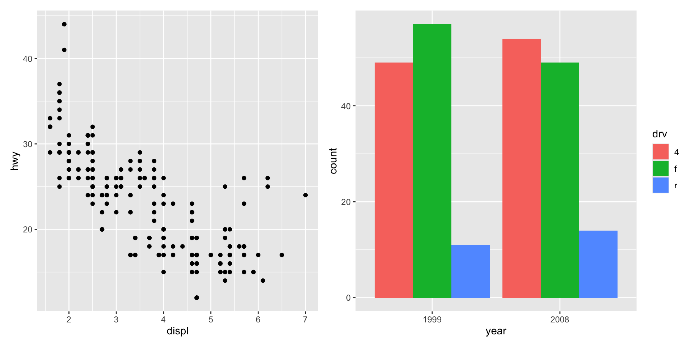
When no layout is specified explicitly, patchwork applies the same heuristic used by facet_wrap() to determine the number of rows and columns. Adding three plots produces a 1 × 3 grid; four plots produce a 2 × 2 grid:
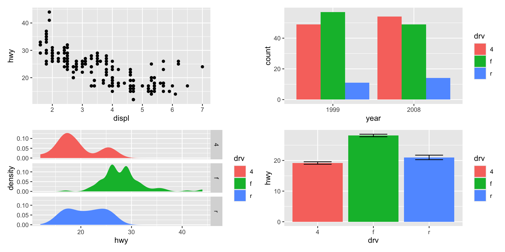
Automatic alignment
patchwork aligns the plotting regions across all assembled panels. In the 2 × 2 example above, notice that:
- All four plot panels share aligned left and right edges.
- The y-axis titles of the two left panels are aligned vertically, even though the axis tick labels in
p3are wider than those inp1. - Faceted plots (such as
p3) are treated correctly without any manual adjustment.
This automatic alignment is one of patchwork’s key advantages over manual layout approaches.
Taking control of the layout
plot_layout() — explicit grid specification
The most direct way to override the default layout is to append plot_layout() to the assembled plot. Its ncol and nrow arguments set the number of columns and rows respectively:
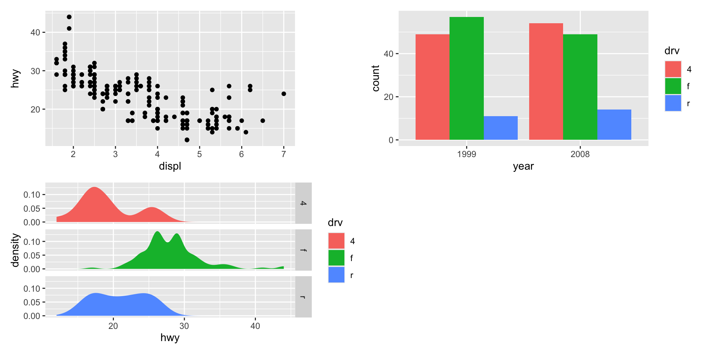
The | and / operators — single row and column shortcuts
Two dedicated operators make common arrangements more readable:
p1 | p2— forces a single row (all plots placed horizontally).p1 / p2— forces a single column (all plots stacked vertically).
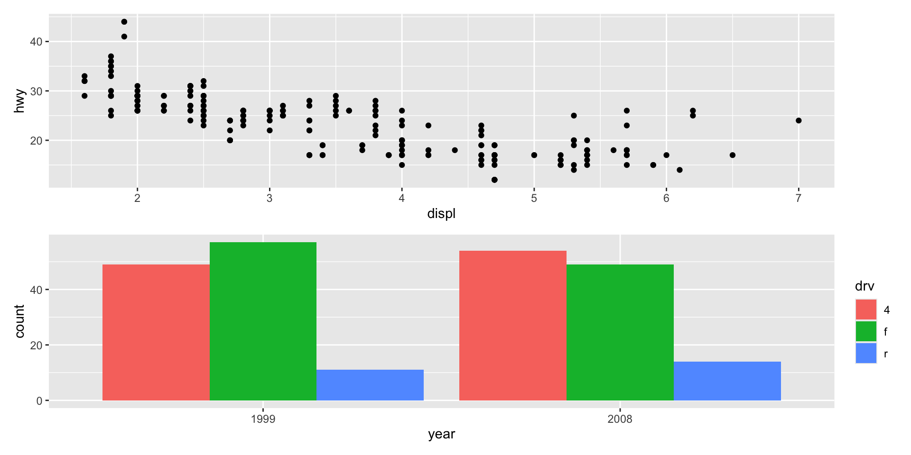
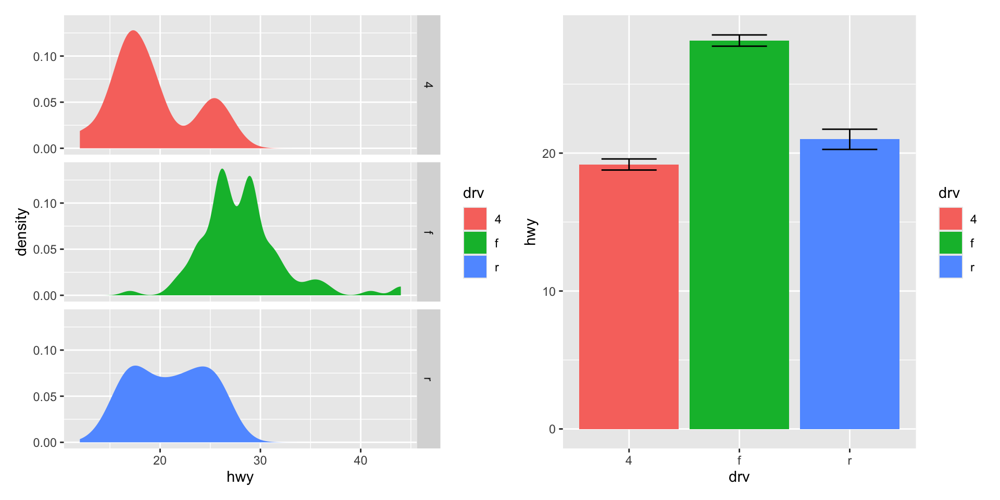
Under the hood, | and / are syntactic sugar for plot_layout(nrow = 1) and plot_layout(ncol = 1) respectively, but using them makes the intended structure of the layout immediately clear when reading the code.
Nested layouts
The | and / operators can be nested inside parentheses to construct complex, non-uniform layouts:
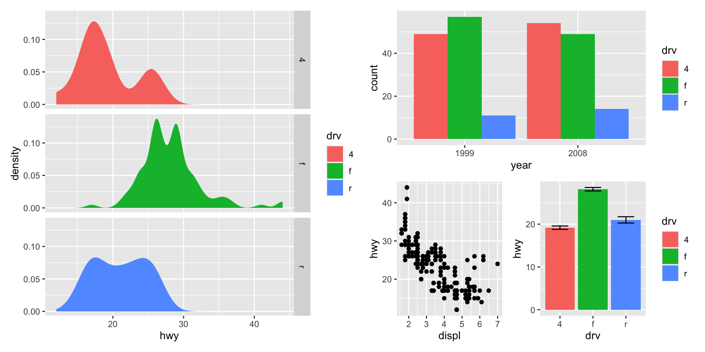
Reading this expression left-to-right: p3 occupies the left half of the plot; the right half is split vertically into p2 on top and a side-by-side arrangement of p1 and p4 on the bottom.
design — freeform layout specification
For layouts that cannot be described as nested rows and columns, plot_layout() accepts a design argument — a multi-line character string in which each letter identifies a plot and # marks an empty cell:
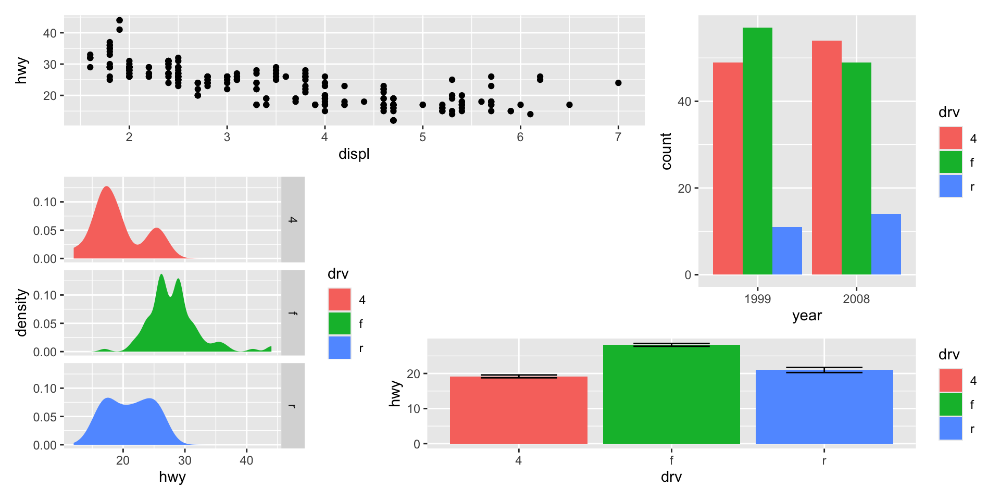
Each letter maps to a plot in the order they were added with +. Here: p1 spans the top-left two cells, p2 occupies the right column across rows 1 and 2, p3 spans the left column of rows 2 and 3, and p4 spans the bottom-right two cells.
Collecting legends — guides = "collect"
When multiple panels share the same aesthetic mapping, their legends are identical and displaying all of them wastes space. Setting guides = "collect" in plot_layout() gathers all guides into a single location, removes exact duplicates, and positions them according to the global theme:
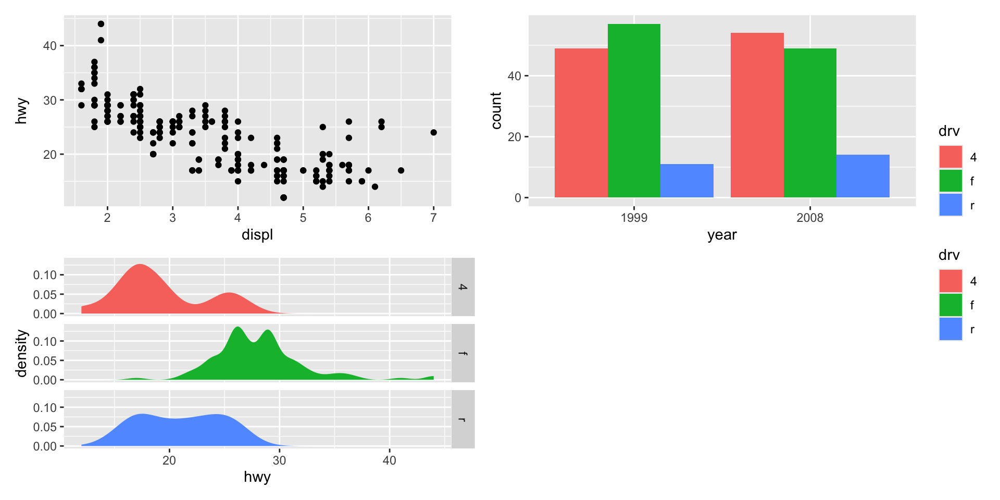
guide_area() — placing collected guides in empty space
If the layout contains an empty cell (a # in the design string), that space can be used to house the collected guides instead of placing them outside the plot boundary. guide_area() reserves a plot-sized slot specifically for this purpose:
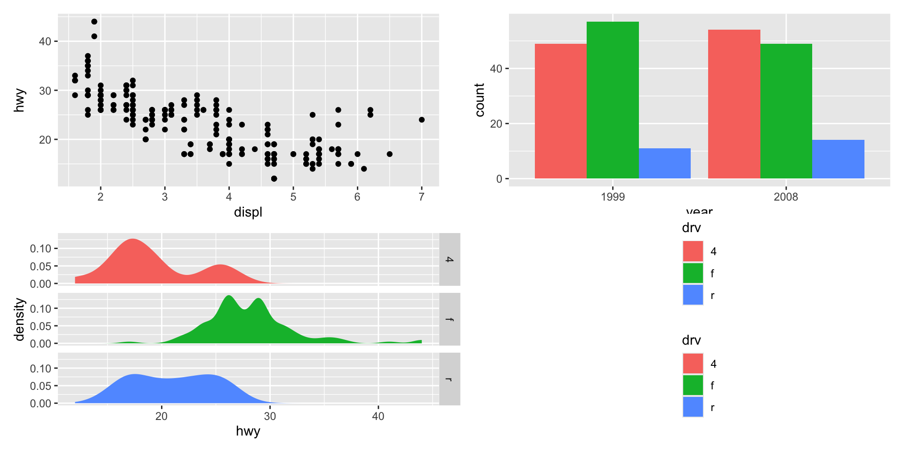
The fourth position in the 2 × 2 grid is now occupied by the collected legend rather than empty whitespace.
Modifying subplots
Indexing individual panels with [[]]
Because assembled plots remain standard ggplot objects until rendered, individual sub-plots can be extracted, modified, and reinserted using [[]] double-bracket indexing. The index corresponds to the plot’s position in the assembly (left-to-right, top-to-bottom):
p12[[2]] retrieves the second plot (p2), applies theme_light(), and stores the modified version back in position 2.
The & operator — applying a modification to all subplots
Modifying each subplot individually is verbose. The & operator broadcasts any ggplot2 addition — a theme, a scale, a coordinate system — to every subplot in the assembly simultaneously:
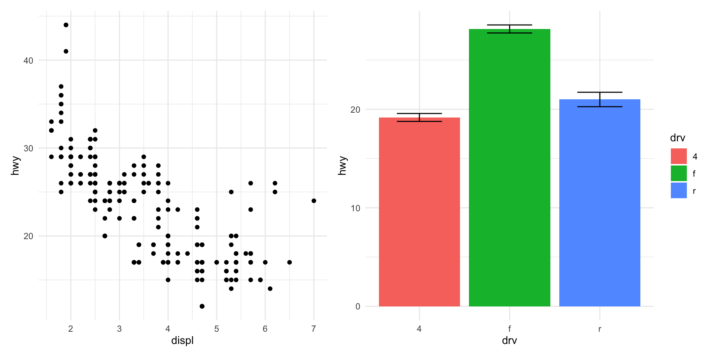
Synchronising axes with &
& is particularly useful for enforcing a shared axis range across panels that display the same variable. Applying the same scale_y_continuous() to all plots ensures the y-axes are directly comparable:
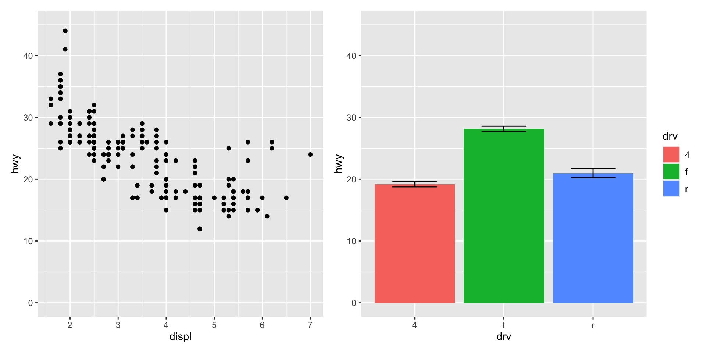
Adding annotation
plot_annotation() — titles and captions for the whole assembly
Once multiple plots are combined, they function as a single visual unit. Titles, subtitles, and captions that describe the composite figure — rather than any individual panel — should be attached to the assembly using plot_annotation():
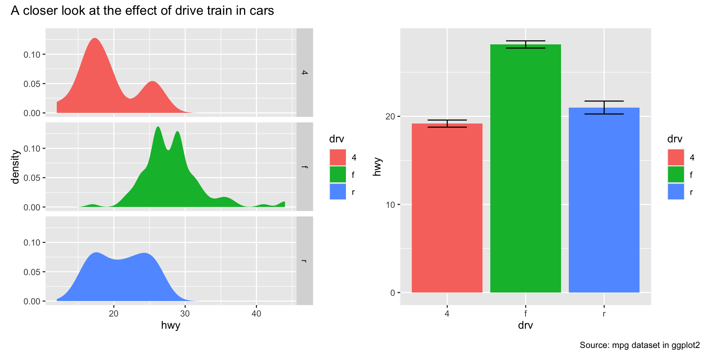
Applying a theme to the annotation text
The theme argument of plot_annotation() controls the typographic style of the composite-level title, subtitle, and caption independently of the subplot themes:
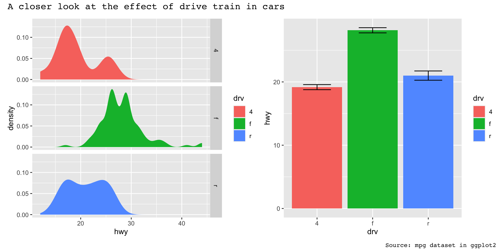
To apply the same theme to both the annotation text and all subplot panels in one step, use & with a theme object. This modifies the global theme (which governs annotation typography) and each subplot’s theme simultaneously:
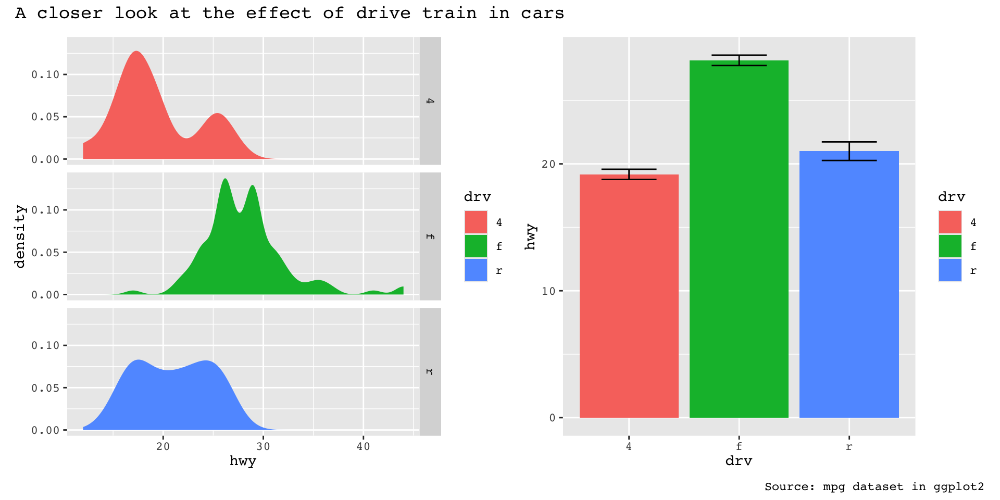
tag_levels — automatic subplot labels
In scientific publications, multi-panel figures are conventionally labelled with letters or numerals (A, B, C… or I, II, III…) so that figure captions can refer to specific panels. patchwork automates this with the tag_levels argument of plot_annotation():
Other accepted values are "A" (uppercase Latin), "a" (lowercase Latin), and "1" (Arabic numerals).
Nested tag levels
For assemblies that contain nested patchworks, a second tagging level can be activated on the inner assembly using plot_layout(tag_level = "new"). The tag_levels argument of plot_annotation() then accepts a vector specifying the scheme for each level:
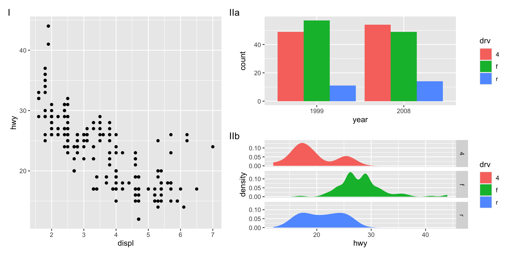
The outer level uses uppercase Roman numerals (I, II, …) and the inner level uses lowercase Latin letters (a, b, …), producing tags such as “IIa” and “IIb” for the two nested panels.
Arranging plots on top of each other
Arranging plots on top of each other
Side-by-side layouts place plots in non-overlapping regions of the page. A distinct use case is insets — small auxiliary plots placed on top of a larger background plot. patchwork handles this through the inset_element() function.
inset_element() marks a plot as an inset to be overlaid on the immediately preceding plot in the assembly. Its four required arguments specify the inset’s boundaries:
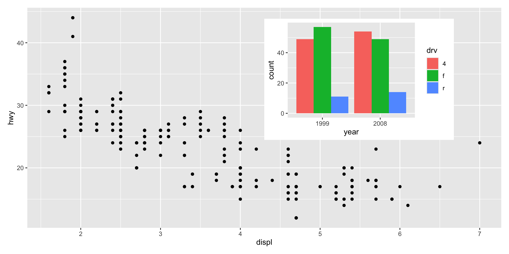
Position units and the align_to argument
By default, left, right, top, and bottom are expressed in npc (Normalised Parent Coordinates), which run from 0 to 1 across the panel area of the background plot. To position the inset relative to the full plot area (including axis titles and labels), set align_to = "full".
Any grid::unit() type is accepted, enabling exact metric positioning. The example below places the inset exactly 15 mm from the top-right corner of the full plot:
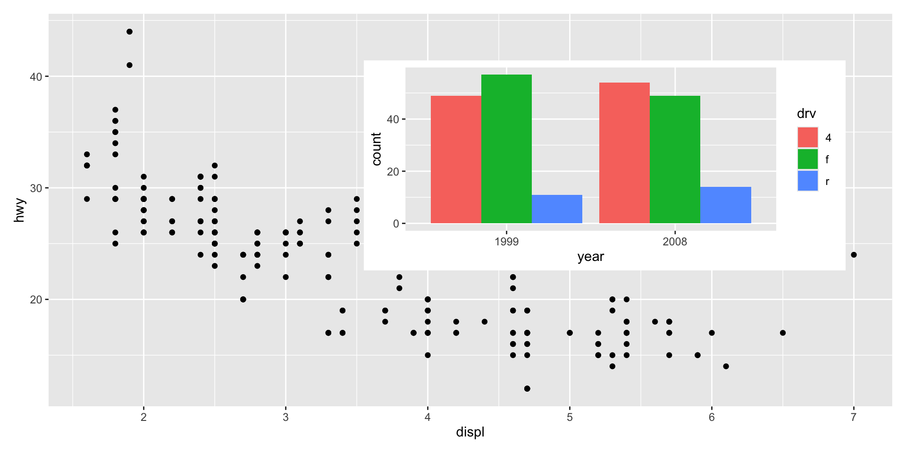
Insets are not limited to single ggplots
Any graphics object that wrap_elements() can handle — including a nested patchwork assembly — can serve as the inset. The example below insets a stacked two-panel patchwork (p2 / p4) onto p1:
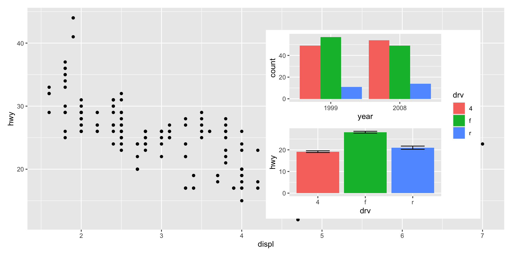
Modifying insets after assembly
Insets remain as live patchwork subplots until rendering, so the & operator applies modifications to both the background plot and the inset simultaneously:
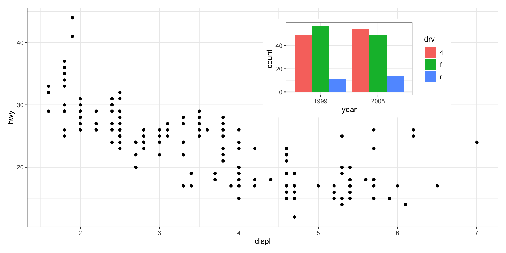
Auto-tagging works with insets
Subplot tags assigned through plot_annotation(tag_levels = ...) apply to insets in the same way as to regular side-by-side panels:
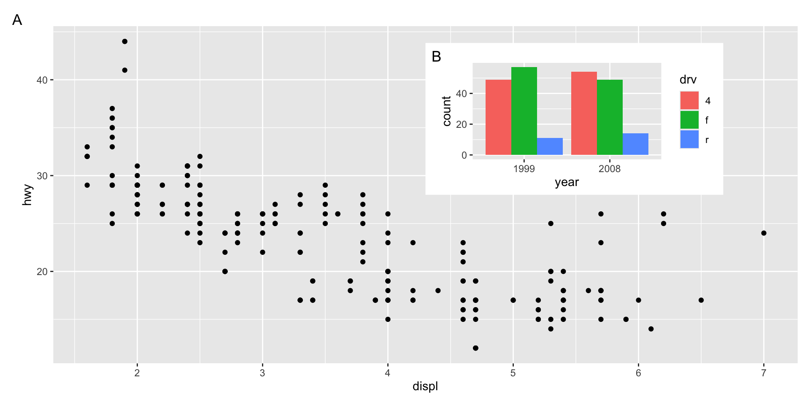
Both the background plot and the inset receive a tag, enabling them to be referenced individually in a figure caption.
Wrapping up
Wrapping up
This chapter has introduced the principal tools provided by the patchwork package for composing multi-panel figures:
| Operator / Function | Purpose |
|---|---|
p1 + p2 |
Place plots together (auto layout) |
p1 \| p2 |
Force single row |
p1 / p2 |
Force single column |
plot_layout() |
Control ncol, nrow, design, guides |
guide_area() |
Reserve a cell for collected guides |
p[[i]] |
Extract / replace individual subplots |
& |
Broadcast a modification to all subplots |
plot_annotation() |
Add titles, captions, and auto-tags |
inset_element() |
Overlay a plot as an inset |
patchwork additionally supports non-ggplot graphic objects (base R graphics, grid grobs) through wrap_elements(), and provides an alternative layout constructor area() for programmatic generation of complex designs. Full documentation and worked examples for all these features are available at https://patchwork.data-imaginist.com.
Acknowledgement
Copyright notice. These teaching materials have been adapted from ggplot2: Elegant Graphics for Data Analysis (3e). All rights are reserved by the original authors and publishers.
Non-commercial use only. These materials are strictly intended for educational purposes and must not be used for commercial gain or profit.
Proper attribution. Any reproduction, distribution, or use of these materials must provide proper attribution to the original source.
References

ggplot2: Elegant Graphics for Data Analysis